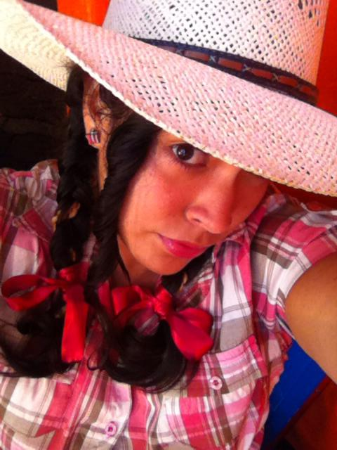

Tus ojos
Permiteme decirte que tienes una mirada, que a mi en lo personal, hace que me estremezca, me encanta, me fascina, amo tu mirada, tan tierna, cautivadora, tan... fascinante.

(No es realmente una carta, es solo una expresión)
Fer, en realidad no se como comenzar esto así que diré todo aquello que me nace por ti.
Permiteme decirte que yo en verdad te quiero, por ti siento cosas que nunca había sentido antes y bueno, a decir verdad te quiero de maneras que no puedo ni explicar y es que tú llegaste a mi vida a mejorarla, a hacerme sonreír, eres aquella sonrisa a la pantalla, aquella carrera que hago corriendo buscando mi celular solo porqué escuche tu canción y corro a contestarte, esos suspiros antes de dormir, esa anhelo de un mnsj de buenos días. Eres mi todo realmente, mis sueños, mis suspiros, mis anhelos, mi corazón, etc., etc.
Yo te quiero, te adoro, me encantas y quizás otras 5 letras que bueno, siento que es temprano para decirtelas. Y en verdad deseo e incluso te suplico que me permitas ser parte de tu vida, darte detalles, decirte "amor" y que tú me respondas con un "bebé" que en verdad me enamora.Quiero ser parte de tu vida, pero no solo como aquél chico que esta loco por ti, no solo como tu amigo o como tu pretendiente, quiero estar en tu vida como tu novio si así me lo permites y yo prometo y te juro que yo no te fallaré.
Permiteme decirte que tienes una mirada, que a mi en lo personal, hace que me estremezca, me encanta, me fascina, amo tu mirada, tan tierna, cautivadora, tan... fascinante.
Tu sonrisa es algo de lo que más me encanta, la forma en que sonries tan delicadamente, tan linda, hermosa, es como ver una pintura en propia vida. ¿Me explico? Tu sonrisa me encanta, me fascina, y francamente me gustaría ser el motivo de tus sonrisas.
¿Sabias que noto siempre que juegas con tu cabello? bueno si no acabo de echarme de cabeza jeje, perdón si te lo digo es solo que en verdad me gusta tu cabello, es tan lindo e incluso sexy jeje, se te ve muy bien y te quedá de maravilla y en lo que a mi me concierne, dejalo así porqué me encanta.

(Por cierto, puse esa foto porqué me encanta como se te ven las coletas :3)
Fer... Fer.. mi querida Fer... que puedo decir, bueno más bien que me permites decir.
Tu cuerpo es tan... tan... por Dios, no se como explicarlo, me encanta, me fascina, amo tu cuerpo tan hermoso, perfecto, podría tratar de dibujarlo ya sea en papel o en mi mente y no sería tan espectacular como verte de frente, tu cuerpo tan... sexy, si me permites decirlo, me gusta, me vuelve loco.
Perdona si sueno atrevido, o quizás si se me pasa la mano a decirte esto pero es que no hay nada que ame más que tus labios, aún recuerdo aquel momento en que pude besarte, lo recuerdo como si fuera ayer.
No se si me creas cuando te diga esto pero en realidad siento algo... no se si decirlo, pero siento "algo" con tan solo pensar en la idea de besarte, no puedo evitar morder mi labio pensando en que en algún momento ese sueño guajiro se cumpla.
¿Alguna vez te eh dicho que me enamora tu forma de ser? Bueno, es momento de decirtelo y es que en realidad tu forma de ser es lo que más amo de ti porqué... bueno no se porqué, solo me encanta tu forma de ser, que te rias de todo, bueno generalizando me encanta tu forma de ser.
Yo se que en ocaciones no me expreso bien o que no me expreso lo suficiente pero llega un momento en que pues solo quiero decir lo que siento y es que en realidad te quiero, te quiero y te adoro como no tienes idea, si por mi fuera le presumiria que eres mi novia (Bueno, si lo fueramos) y es solo que me encantas, todo todo me encanta de ti, no hay nada que no me guste porqué para mi eres perfecta